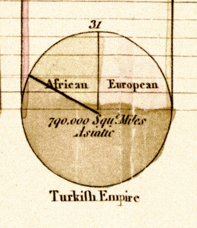
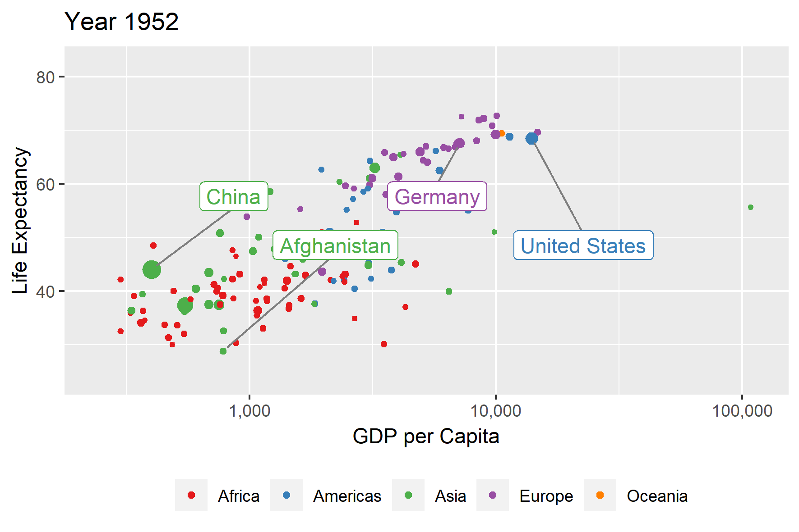

Introduction to data visualisation
On the shoulders of Tufte, Wilkinson and Rosling
1 1. A Brief History of Data Visualisation
1.1 Pre-1600s – Foundations of Visual Thinking
Why this period matters: This is where the seeds of data visualisation were planted—not in statistics, but in cartography, astronomy, and theology. People needed ways to represent spatial relationships (maps), time (astrological calendars), and structured knowledge (diagrams of cosmology or philosophy).
Distinctive features: - No formal statistics, but rich in visual-symbolic systems. - Use of stars, grids, and planetary paths suggest early axes. - Concept of encoding information spatially (e.g., heaven above, earth below).
Reflection: How would you describe the style of these early graphics? What aspects (e.g. symmetry, symbolism) feel familiar, even if they’re centuries old?
1.2 1600–1699 – Measurement and Theory Take Root
Why this period matters: The scientific revolution sparked new ways of observing and measuring the world. Graphs began to link observation and theory. This was the start of visualisation as a scientific method.
Distinctive features: - Use of coordinate systems (Descartes). - Graphs of observational data (e.g., planetary paths). - Rise of political arithmetic — numeric data on populations, births, deaths.
Reflection: This was a time of both scientific rigor and artistic flourish. How does the aesthetic of graphs from this time differ from modern ones? What do they suggest about their intended audience?
1.3 1700–1799 – New Graphic Forms Emerge
Why this period matters: This century saw the invention of abstract statistical charts. Data were no longer just observed or recorded—they were compared, visualised, and published. It marked the birth of formal statistical graphics.
Distinctive features: - Playfair’s invention of bar, line, and pie charts. - Cartographers began adding thematic data to maps. - Time series graphs and economic data charts.

Reflection: Many of these charts were hand-drawn, highly styled, and persuasive. Do you think this adds or detracts from their credibility compared to today’s clean digital charts?
1.4 1800–1850 – Beginnings of Modern Statistical Graphics
Why this period matters: This was a period of creative explosion. Statistical graphics were used to inform, persuade, and even legislate. Thematic cartography flourished. Public health, social reform, and science all turned to visualisation.
Distinctive features: - Florence Nightingale’s rose diagrams. - Charles Dupin’s choropleths. - Guerry’s maps of crime, education, and morality.
Reflection: Consider how these visualisations blend design, emotion, and argument. Are they still “data visualisations” by today’s standards, or something more?
1.5 1850–1900 – The Golden Age of Statistical Atlases
Why this period matters: Graphical excellence reached new heights in both form and ambition. Governments published statistical atlases with advanced graphic design. This was perhaps the most beautiful—and also most purpose-driven—era of visualisation.
Distinctive features: - Minard’s flow maps (Napoleon’s march). - Cheysson’s statistical albums in France. - Elaborate multi-dimensional maps and charts.
Reflection: Many Golden Age charts are celebrated as art. Should data visualisation always strive to be beautiful? Or is functionality more important?
1.6 1900–1950 – The Modern “Dark Ages”
Why this period matters: Despite huge advances in statistics, visualisation declined. Data were prioritised in tables, models, and formal inference. Charts became simpler, and often secondary. But this also set the stage for a new revival.
Distinctive features: - Decline in graphical innovation. - Focus on tables, regression outputs. - Rise of inferential statistics.
Reflection: What might have led to this visual decline? Can you think of a domain today where visuals are undervalued in favour of numbers?
1.7 1950–1975 – Rebirth: EDA and Theory
Why this period matters: John Tukey’s exploratory data analysis revived interest in visual methods. Jacques Bertin introduced a visual grammar. Computer graphics began to emerge. This laid the groundwork for today’s data science.
Distinctive features: - Tukey’s boxplots, stem-and-leaf plots. - Bertin’s visual variables. - First uses of computers for graphics.
Reflection: These visuals are less ornate but highly functional. How do you feel about this balance of utility over aesthetics?
1.8 1975–Present – Structure, Software, and Storytelling
Why this period matters: Today’s era builds on everything before it: perception, aesthetics, ethics, interaction. We have a grammar (Wilkinson), a code ecosystem (ggplot2, D3), and dynamic storytelling (Rosling). Visualisation is now central to communication.
Distinctive features: - Rise of the Grammar of Graphics (Wilkinson → ggplot2). We will cover this extensively in later sessions - Emphasis on accessibility, clarity, storytelling. - Tools for interactivity and animation (Gapminder, dashboards).

Reflection: With so many tools and styles today, how do we balance visual creativity with clarity, truth, and accessibility?
2 2. Gestalt Principles of Perception in Data Visualisation
Data visualisation works because the human brain is wired to spot patterns, group similar items, and interpret relationships. The Gestalt psychologists studied how we perceive visual stimuli, and their principles help us understand why certain designs are more intuitive.
2.1 2.1 Proximity
We group elements that are close together. In charts, this affects how we interpret clusters or outliers.
2.2 2.2 Similarity
We group elements that look alike (in shape, colour, size).
2.3 2.3 Continuity
We follow lines or smooth paths. Line graphs leverage this instinct to suggest trends.
2.4 2.4 Closure
We perceive complete figures even if parts are missing. Works well in minimalist visual design.
2.5 2.5 Figure–Ground
We distinguish between the main subject and the background. High contrast enhances this effect.
2.6 2.6 Common Fate
Elements moving together (in animation or layout) are perceived as a group.
2.7 2.7 Focal Point
We are drawn to visual elements that break the pattern.
3 3. Tufte’s Principles of Graphical Excellence
Edward Tufte’s work reframes visualisation as a discipline of truth-telling. His focus was clarity, integrity, and minimalism.
3.1 3.1 Graphical Integrity
The representation of numbers should be proportional to the quantities represented.
3.2 3.2 Data-Ink Ratio
Maximise the proportion of “ink” (or pixels) that conveys data.
3.3 3.3 Small Multiples
Use a series of similar charts to show patterns across categories. Instead of one messy chart with dozens of overlapping lines, each panel isolates one category.
3.4 3.4 Avoid Chartjunk
No unnecessary decoration. Clarity over flair.
3.5 Video: Edward Tufte on Design Principles
4 4. Hans Rosling and Gapminder: Data as Drama
Hans Rosling believed data could challenge stereotypes, surprise audiences, and tell human stories.
4.1 4.1 Data Storytelling
Rosling used animation, voice, and pacing to narrate global trends in a way that was emotionally resonant.
4.2 4.2 Dynamic Visualisation
Animated scatterplots (e.g., Gapminder) allowed viewers to track change over time, reinforcing the Gestalt principle of common fate.
4.3 4.3 Comparisons & Context
Rosling always situated the data—global vs regional, poor vs rich—not in isolation.
4.4 4.4 Accessibility and Impact
The Gapminder Foundation promotes open, understandable data for all.
4.5 Video: Hans Rosling – “The Best Stats You’ve Ever Seen”
5 Final Reflection
We’ve now traced the history of data visualisation, seen how perceptual psychology (Gestalt) informs design, examined principles of graphical integrity (Tufte), and explored modern dynamic storytelling (Rosling).
- Which of the four perspectives (historical, Gestalt, Tufte, Rosling) most resonates with your approach to data?
- Can you think of a time when visualising something changed the way you understood it?
- Try to spot Gestalt principles or Tufte’s rules in your favourite infographic or dashboard.
Next steps: We will heavily use the Gapminder dataset and ggplot, following Wilkinson’s grammar of graphics.